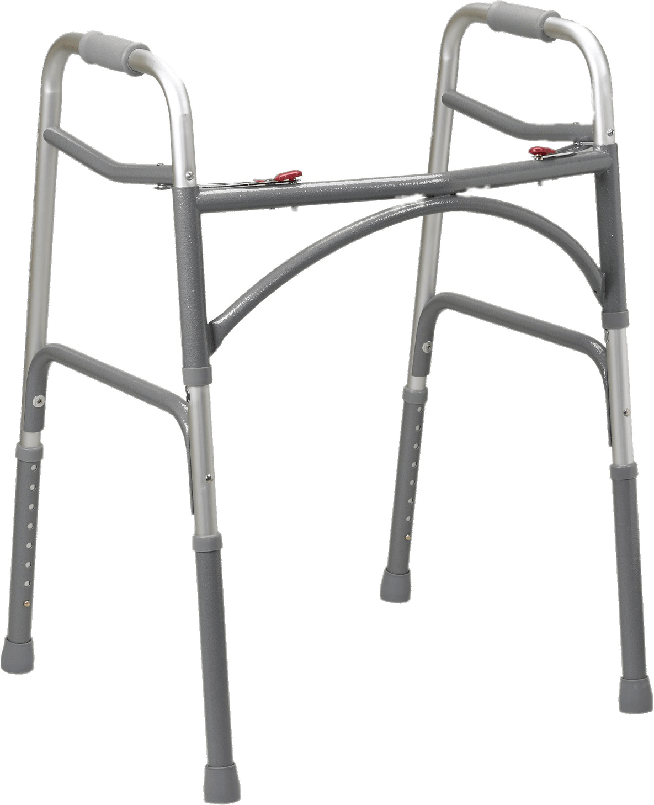

Haptic Walker
Project Milestone #1
Team 1
Anuj Ketkar, Varun Somarouthu, Emma Ong, Vivian Zheng
Target Domain & Context
The target domain is people who have difficulty seeing and walking when there are unexpected surface elevation changes. When changes in surface elevation occur (ex: going down steps, going down a steep hill) in some environments, they can be hard to detect, making it easy to trip and fall. This could become a massive problem if it happens to someone with a walking disability, as falling could be a life threatening event. It is already really easy for someone without a walking disability to miss a step. It could be even harder for someone with a walker to see these changes since the walker obscures their vision. We hope to create an accessible device that will help mitigate these dangers.
Problem Statement
The goal of the haptic walker is to detect unexpected changes in the walking surface and send a vibration to notify its user when a surface change is coming up.
The Haptic Walker is mainly going to be used by people that have a hard time walking. A few ways that we could simulate this limitation include adding additional weight to the walker if some people have problems with their muscles causing a limited range of motion. Alternatively, the walker can be used to support the visually and hearing impaired. To create viable constraints to show the limitations for people with vision problems, we can use a blindfold, use a dark location, foggy glasses, or glasses that simulate the experience of color blindness. To simulate the limitation of impaired hearing, we could use noise canceling headphones to make it much harder to hear.
Target Product Ideas
- Current Existing Designs: Walker & Cane
- Problems: Regular existing walkers & canes cannot warn the user of changes in elevation, leaving the user to their own devices to figure out where altitude differences are. Those without any impairments miss a step every once in a while and trip down the stairs so the users of walkers & canes who often have various levels of visual impairment, are elderly, etc. are at even greater risk of falling down the stairs. Walking down the stairs at night brings another level of danger. Having a walker that warns the user of changes in elevation would help prevent falls & increase safety for those using walkers & canes.
- Our Accessible Design Idea: Haptic Walker
- Detecting Changes in Altitude
- Adding Sensors: ultrasonic sensors could be used to identify changes in distance from the walker to the ground surface.
- Implementing Computer Vision: computer vision could also be used to detect changes in elevation. Using a camera attached to the walker, images of the environment could be taken and using image recognition, changes could be detected in the ground surface.
- GPS: using GPS technology, the walker can find the user’s altitude and location. When the walker senses the altitude level changing, it could alert the user to potential hazards.
- Alerting the User
- Auditory Cues: emit a different sound depending on the distance to the ground
- Tactile Feedback: vibration when the walker detects a curb or step
- Other Accessible Design Examples:
- Smartphone App: the app could give audio/tactile feedback for elevation changes detected by GPS technology
- Wearable Device (wristband, smartwatch, etc.): similar to the smartphone app, a wearable device could provide audio/tactile feedback for altitude differences identified by the GPS receiver
Background Research
In order to create the haptic walker, additional gadgets and technology need to be added to an ordinary walker in order to sense changes in the environment, process those changes, and give feedback to the user.
In terms of hardware, the following tools are needed to make the overall system:
Arduino

Bridges the gap between hardware and software.
Ultrasonic Sensor

Senses changes in the floor and determines when there are big gaps or steps coming up.
Vibration Motor

Sends vibrations to the user whenever a step or gap is detected.
Battery Pack (Power Supply)

Powers the above devices.
Walker

Serves its original purpose and stores the above electronic devices in order to support the new haptic features.
With the above devices connected to the power supply and the physical walker, we hope to use the sensor to detect when distance diagonally below of the walker increases (indicating a step). This signal will go through the arduino board and get rerouted to the vibration motor that will vibrate the walker in order to warn users that there is a step down ahead.
In the future, additional technologies and capabilities, like the computer vision and GPS mentioned above, can be added to the walker.
After researching this problem and investigating the different technologies, we believe the greatest challenge will be identifying when there actually is a true drop off/step ahead. This is because on flat land, the user will pick up the walker when taking a normal step, increasing the distance between the sensor and the ground. However, this increase in distance should not be flagged as an actual step or drop in the ground. In order to resolve this challenge, we have a potential solution of using two sensors, one to detect if the walker is on the ground and one to detect if there is a step ahead. It is interesting how this is a challenge for both real users of walkers and our team.